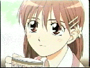
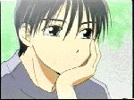
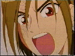
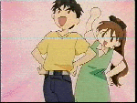
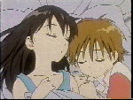
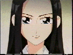
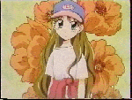

| 
| 유키노 미야자와(윤선)
우리의 주인공입니다.
언제나 용모단정, 재색겸비 팔방미인 같지만,
실은 칭찬받는것을 좋아하여 노력하여 얻어낸
허영덩어리
아리마(독고준)와 라이벌관계에서 결국은 연인관계로..
| 
| 아리마 소이치로(독고준)
유키노의 라이벌에서 유키노를 좋아하여
먼저 고백하게 된다.
유키노와 달리 원래부터 핸섬,세련미,수재
그러나 집안 문제로 인하여 그렇게 되지 않으면
어쩔수 없었던것..
유키노에게서 자신이 없는것을 발견하여
부족한것을 메우면서 성장한다.
| 
| 아사바 히데아키
아리마의 친구.. 할렘을 구현하는것이 꿈.
페로몬 덩어리...
| 
| 히로유키 미야자와(좌) : 유키노의 아버지.
가족에 대한 깊은 사랑을 가지고 있다.
어린아이같은 구석이 있으나, 진지해지면 의외로 멋짐
미야꼬 미야자와 : 유키노의 어머니.
아버지의 반대에도 불구하고 어린 나이에 히로유키와
결혼한다. 어렸을적에는 유키노와 많이 닮았다.
히로유키에게 어릴때 많은 괴롭힘을 당했으나 그것이
사랑으로..
| 
| 츠키노 미야자와(좌): 카노의 언니이자 미야자와
식구의 둘째딸. 중학교 3년생이다. 여자들에게 인기가..
카노 미야자와(우): 미야자와 식구의 셋째딸.
소설과 만화를 좋아하며 때때로 매우 논리적인 말로
유키노를 당황시킨다.
| 
| 마호 이자와
유키노에게 가려져 유키노를 따시켰다가 어케어케하여
유키노와 친구가 된다. 유키노를 따시켰던 과거의 죄때문에
유키노에게 꼼짝못한다.
| 
|
유츠바사 시바히메중학교때부터 아리마를 좋아했으나, 동생 취급만 당했다.
유키노가 아리마와 사귀는것을 알고 공격을 시도했으나 실패
결국은 유키노와 친구가 된다.
야생동물같은 성격으로 좋아하는 사람외에는 낯을가리며
먹을것을 주면 잘따른다.. --;
부모님이 재혼하여 약간의 트러블이 있었으나,
현재 새로생긴 동생(?)과 잘지낸다.
| | | | | | |